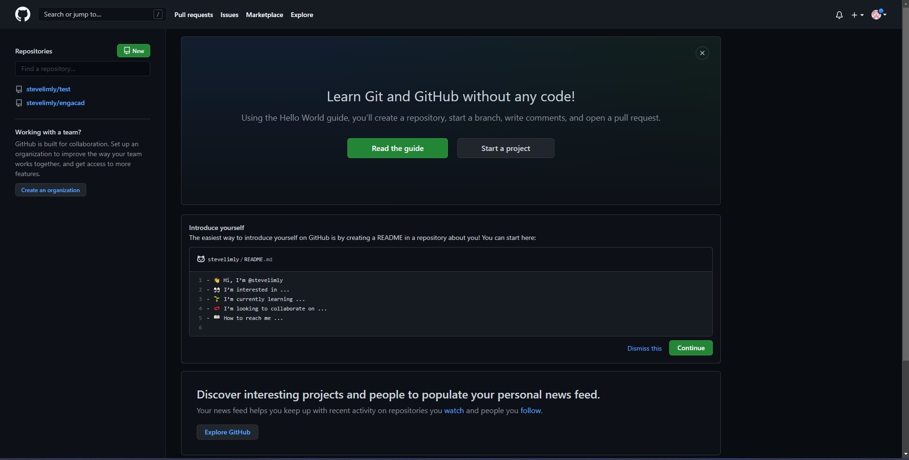
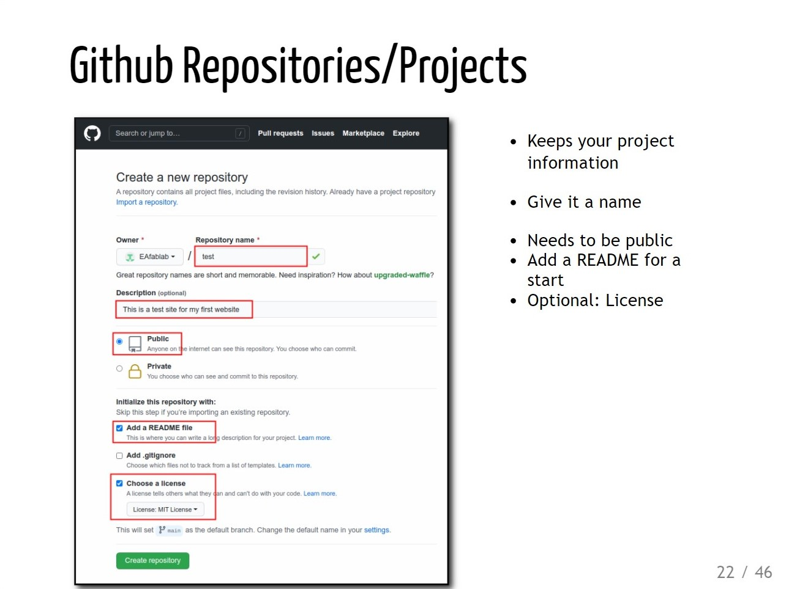
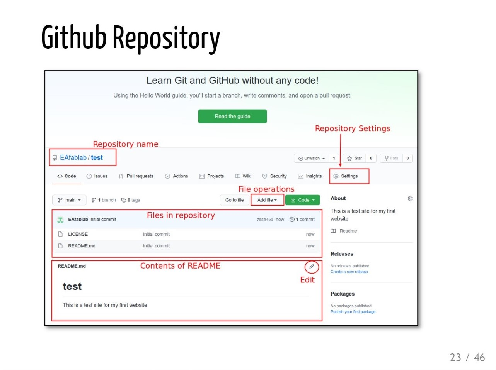
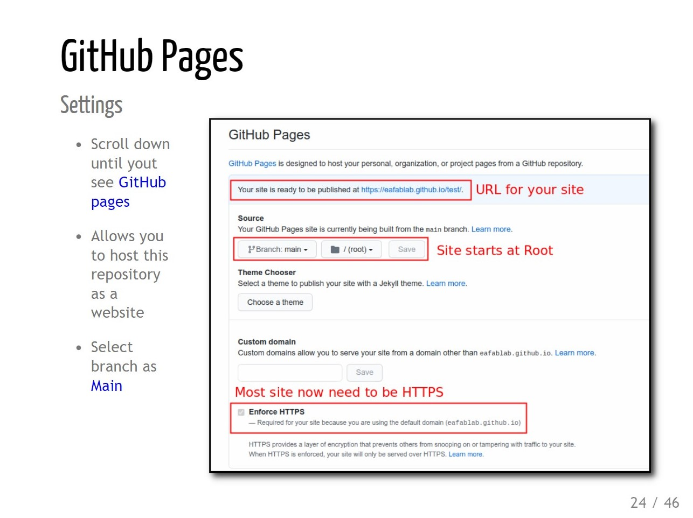
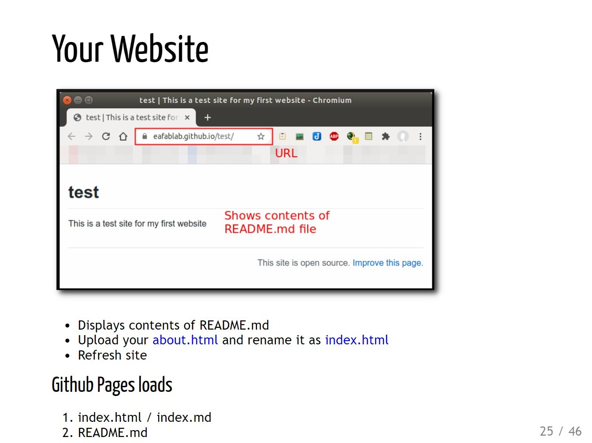
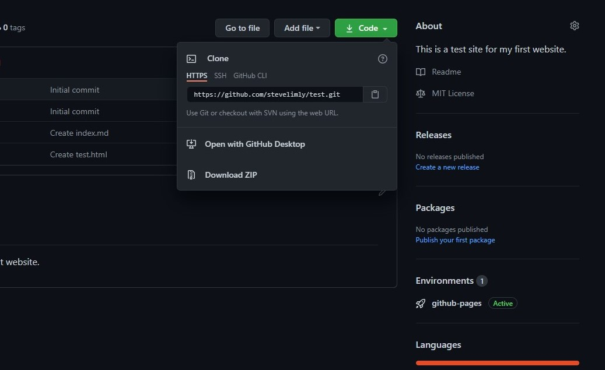

29th & 30th March EA Training Camp
What have I learned in this camp? Through this taining camp, I have learned how to how to create a website. Want to learn how to make your own website? So this are the few steps. First, you need to create a github account. Through this gihub, you can publish your own webpage in public so that you can let others to look at what you have create.
Step 1
Picture above is the example Github account profile you will see now. Then you have to create a repository in your github. Just follow the few steps below.
Step 2
Step 3
Step 4
Step 5
Now you will able to see your own page as a website. Next you just have to learn HTML to defines your contain and CSS to defines your layout. You might wonder how to link your online repositories with your own Text Editor. Well you can use Github desktop to clone yoour repositories to your local desktop. Download Github desktop and sign in with your github account. Then from your github profile online, you will able to clone your repository and make changes with your text editor.
After you have clone your repositories, it will create a file in your local file explorer. Then you can open it with your text editor and start coding. After you save your work in your text editor, just went back your github desktop and push it to the origin.